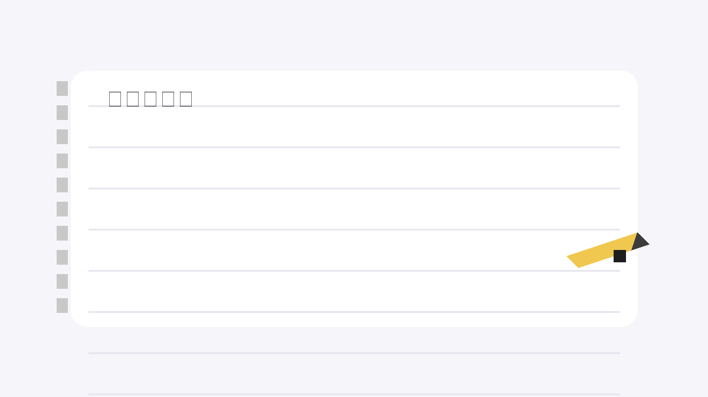

我喜歡把有趣的點子做成可以互動的小遊戲， 從畫面設計到遊戲規則都自己動手完成。下面是我目前的六個作品，歡迎點進去玩玩看。
歡迎來到我的作品集！這裡整理了幾個我做的作品，包含互動網頁與實用工具。點選卡片即可進入各作品。

Google Apps Script 線上記事本，直接讀寫雲端資料夾中的文字檔。
部署後的正式入口，會直接開啟雲端記事本並連到 Google Drive。
如果要我也可以繼續幫你補上其他作品卡片。